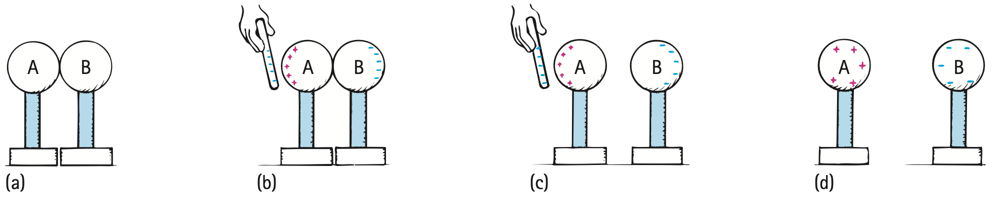

1. What does “neutral” mean about the balance of positive and negative charge in an object?
2. State the electric-force rule for like-sign charges.
3. If an object gains electrons, what net charge sign does it tend to acquire?
4. Which material type allows mobile charge to move readily: conductor or insulator?
5. Name the charging process caused by rubbing two different materials together.
6. Use the induction sequence to explain how two touching conductors can end with opposite net charges even though the charged rod never touches them.

7. A baseline electric force is 24 N. One charge magnitude becomes three times as large while distance is unchanged. Find the new force.
8. Two equal charges are moved from separation $r$ to $r/2$. Determine the factor by which the force magnitude changes.
9. A neutral aluminum can is near a charged balloon. Explain why electrons can shift within the can but are much less free to redistribute throughout an insulating plastic ruler.
10. A charged metal object is connected briefly to Earth. Explain why grounding is described as charge transfer with a large reservoir rather than charge destruction.
11. A student draws protons moving through a solid metal during charging by contact. Critique the particle model and identify which charge carriers actually move in ordinary solids.
12. A model predicts the same attraction/repulsion type when distance changes but a different force magnitude. Explain why both predictions can be correct at once.
13. A sphere has 20 excess electrons relative to protons. How should its net charge be described?
14. Which sign pairing would accelerate apart if released?
15. Object X loses electrons to Y. Which accounting statement is correct?
16. An added electron stays near one spot on rubber but spreads on copper. Which property explains the difference?
17. Which charging method begins with influence at a distance and can be completed without touching the charged source?
18. When one charge doubles and separation also doubles, the force magnitude becomes
19. A charged balloon pulls a neutral metal can. Which evidence prevents the conclusion that the can has opposite net charge?
20. A diagram shows protons crossing from one solid object to another during rubbing. What is the key error?